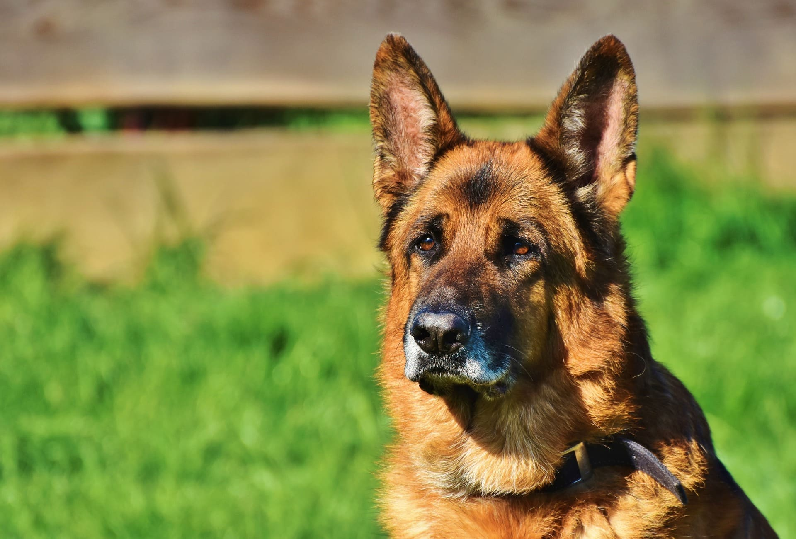

O Excelente faro desse amigão pode surpreender! Certamente um dos cães mais elegantes e ativos que existem, o Pastor-alemão pode ter uma fama de bravo, mas é, na verdade, um grande amigo da família. Com o treinamento correto, todas as características cativantes deste pet vêm à tona — e não são poucas! Muito obediente, este amigão está sempre alerta para proteger a casa e a família, sendo um exemplo de lealdade. Se estiver acostumado desde cedo, ele pode ser uma excelente companhia para os tutores, as crianças e até mesmo outros pets! Quer saber tudo sobre o Pastor-alemão? Então, continue a leitura!
Os cães dessa raça são bastante ativos e precisam de uma rotina de exercícios bastante regrada. Por ser uma raça de caça e pastoreio, eles requerem atividades todos os dias. Algumas recomendações para este momento são brincadeiras que exigem a inteligência e a perspicácia do peludo. Se essa não for uma possibilidade, uma corrida já está de bom tamanho para manter o pet longe do tédio. Sem as atividades, contudo, o cão pode ficar inquieto e procurar métodos indesejáveis para se desestressar, como roer objetos ou latir muito.
Assim como todo cachorro, o Pastor-alemão precisa ser socializado desde filhote. Isso é muito importante para a raça, especialmente porque ela pode ser bastante tímida ao redor de estranhos e não se sentir muito à vontade com eles. Acostumando o pet a situações em que diferentes pessoas estão presentes desde cedo, ele se sentirá mais à vontade e menos tímido. A mesma premissa vale para interações com crianças e até mesmo outros amigos de quatro patas.
Fizemos um gráfico nivelando de 0 a 5 as características da raça, veja a baixo!
Este é um cachorro bem vigoroso e musculoso, com membros posteriores levemente inclinados. As coxas são muito potentes, bem como a mordedura da raça, derivada de um maxilar forte. As orelhas são eretas, pontiagudas e bem alinhadas, em constante estado de atenção. A raça pode ter pelos longos ou curtos, sempre com camada dupla. A pelagem é preta, com marcas marrom-avermelhadas, marrons e amarelas ou, até mesmo, cinza-claro. Por conta das características da pelagem, muitas vezes, ele é chamado de Pastor-alemão-capa-preta.
Os Pastores Alemães, apesar de perderem muito pelo, não requerem banhos frequentes, pois o excesso pode prejudicar a saúde da pelagem. Recomenda-se banhos apenas quando necessário, com orientação veterinária se necessário. Esses cães não são propensos a sujeira excessiva ou odores fortes. Embora não haja problemas de saúde específicos na raça, a atenção a sinais de displasia do quadril e do ombro é fundamental. Esses cuidados contribuem para a saúde geral do Pastor Alemão.

Alguns cuidados são cruciais ao receber um filhote de Pastor-alemão como novo membro da família. Tenha paciência para entender os hábitos dos pequeninos e sempre respeite as necessidades deles. Se você acreditar que há algo de incomum, procure um médico-veterinário antes de fazer alguma mudança. Pode demorar alguns dias até o pet ficar bem à vontade no novo lar, por isso é essencial que você dê muita atenção a ele. Não se esqueça também de providenciar cuidados como vermifugação e vacinação.